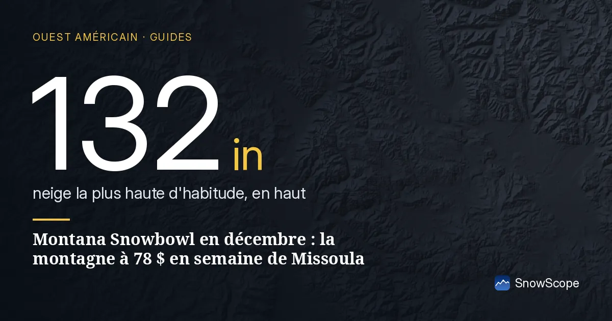
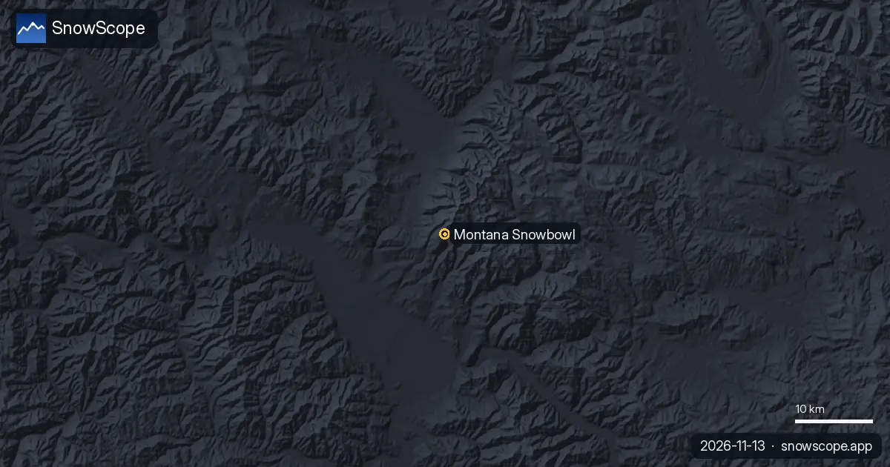

Montana Snowbowl en décembre : la montagne à 78 $ en semaine de Missoula
Montana Snowbowl est la montagne locale de Missoula : raide, simple, et affichant honnêtement des prix 2026/27 de 78 $ en semaine et 85 $ le week-end. Sur notre historique de neige, le milieu et le haut de la montagne sont en général prêts à la mi-décembre. La base, c'est une autre histoire.
Consultez les prévisions neige en temps réel pour Montana Snowbowl sur l'application SnowScopeHauteurs de neige, alertes poudreuse et carte 3D, gratuitement.
Une montagne de ville universitaire
Snowbowl est à un court trajet de Missoula, avec 6 remontées et environ 27 mi (43 km) de pistes sur notre cartographie, d'environ 4 990 pieds (1 522 m) à 7 530 pieds (2 296 m). Il n'y a pas de village de station ; les locaux montent, skient dur et rentrent chez eux.

Les prix
La grille tarifaire 2026/27 est courte. Une journée complète adulte coûte 78 $ en semaine et 85 $ le week-end et les jours fériés. Le forfait après-midi, à partir de 12h30, coûte 72 $ en semaine et 77 $ le week-end et les jours fériés.
Snowbowl figure aussi sur l'Indy Pass. L'Indy Base Pass coûte 419 $ et l'Indy+ Pass 469 $, chacun avec deux jours dans chaque station membre.

Pourquoi la base est en retard
Le bas de Snowbowl est bas pour les Rocheuses du nord, et cela se voit. Un 15 décembre type, la base a 16 in (40 cm), avec seulement 28 % des hivers au-dessus de 20 in (50 cm). La mi-montagne, vers 6 260 pieds (1 909 m), a 30 in (76 cm), avec 83 % des hivers au-dessus de 20 in, et le sommet 37 in (93 cm), avec 91 %.
Semaine après semaine, la part des semaines à bonne neige à mi-montagne est de 67 % la première semaine de décembre, 83 % la deuxième et la troisième, et 91 % la semaine de Noël. Un décembre maigre avait encore 18 in (45 cm) à mi-montagne le 15. La neige durable y arrive en général dans la seconde moitié d'octobre.
Snowbowl, Bridger Bowl ou Lookout Pass ?
Bridger Bowl près de Bozeman facture 86 $ en ligne et 99 $ au guichet, et sa mi-montagne avait 20 in (51 cm) un 15 décembre type, avec seulement la moitié des hivers au-dessus de 20 in. Lookout Pass, à l'ouest sur l'I-90, est à 63 $ en semaine avec réservation et avait 30 in (75 cm).
Début décembre, Snowbowl et Lookout sont les meilleurs choix des trois sur la neige, et Snowbowl a le terrain le plus raide.
Quand décembre est maigre
Les 15 premiers hivers de notre historique avaient 35 in (88 cm) à mi-montagne un 15 décembre type, et chacun dépassait 20 in ; les 15 derniers avaient 28 in (71 cm) et 80 %. L'hiver dernier a bien commencé, 30 in (76 cm) à cette date. Si un décembre maigre arrive, restez sur les pistes damées du haut et surveillez la carte de neige pour la prochaine tempête.
Conseils aux skieurs
- Skiez en semaine : la journée complète est à 78 $, et le forfait après-midi à 72 $.
- La route d'accès est raide et étroite près du sommet : pneus neige ou chaînes obligatoires.
- Attendez-vous à une couverture mince en bas début décembre ; montez avant de juger la journée.
- Terrain raide et neige précoce : vérifiez le bulletin avalanche avant de quitter la station.
Références et crédits
- Montana Snowbowl, lift tickets 2026/27 (official) montanasnowbowl.com/sbblog/lift-tickets/
- Indy Pass, shop 2026-27 (official) www.indyskipass.com/shop
- Bridger Bowl, lift ticket pricing 2026/27 (official) bridgerbowl.com/tickets-passes/lift-tickets
- Lookout Pass, lift tickets 2026-2027 (official) skilookout.com/lift-tickets/
- OpenSkiMap (mapped lifts and runs) openskimap.org/
- avalanche.org, US avalanche centers and forecasts avalanche.org/
À propos de ces chiffres
Chiffres de neige : historique SnowScope, 46 hivers passés (1980-81 à 2025-26) aux altitudes indiquées (bas, mi-pente, sommet), une reconstitution de la neige passée pour une zone, corrigée de l'altitude (base ERA5-Land ; Snow_Hydro 1 km pour le Maroc), pas les bulletins de la station. Neige actuelle : la carte SnowScope. Remontées, pistes et altitudes : cartographie OpenSkiMap. Prix : les pages officielles listées ci-dessous, consultées le 13 novembre 2026 ; les prix dynamiques varient avec la date et la demande.
Bulletins d'avalanche officiels: Gallatin National Forest Avalanche Center
Citer ce bulletin
Pour la recherche, l'enseignement ou la presse : chiffres et graphiques réutilisables librement sous CC BY 4.0 avec cette citation.
SnowScope (2026), Montana Snowbowl en décembre : la montagne à 78 $ en semaine de Missoula, https://snowscope.app/blog/fr/2026/11/montana-snowbowl-missoula-december-cheap-skiing.html, consulté le 2026-11-14
SnowScope (Atlas Labs). (2026, November 14). Montana Snowbowl en décembre : la montagne à 78 $ en semaine de Missoula. SnowScope snow reports. https://snowscope.app/blog/fr/2026/11/montana-snowbowl-missoula-december-cheap-skiing.html
BibTeX
@misc{snowscope2026montanasnowbowlmissoulad,
author = {{SnowScope (Atlas Labs)}},
title = {Montana Snowbowl en décembre : la montagne à 78 $ en semaine de Missoula},
year = {2026},
month = nov,
howpublished = {\url{https://snowscope.app/blog/fr/2026/11/montana-snowbowl-missoula-december-cheap-skiing.html}},
note = {Published 2026-11-15 09:34 UTC; accessed 2026-11-14}
}· CC BY 4.0 · Méthodes, données et outils →
Montana Snowbowl : neige et température selon l'altitude, cet hiver vs l'hiver dernier (outils) →
Suivre Montana Snowbowl
Gratuit : un message quand la neige arrive, et la météo chaque matin.